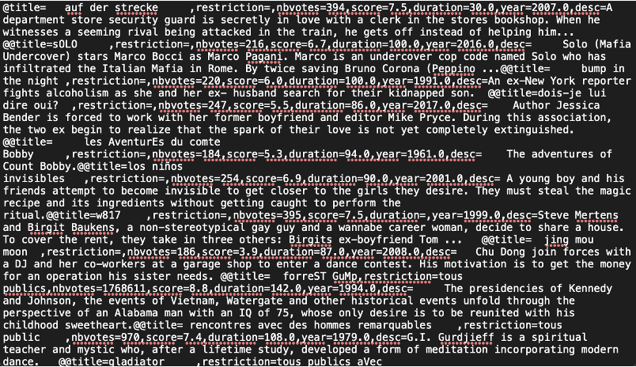

SAÉ : Lecture & Écriture de fichiers
Automatisation du nettoyage et de la réorganisation de données cinématographiques via Python.

Contexte
Dans le cadre de cette SAÉ (Situation d'Apprentissage et d'Évaluation) réalisée lors du BUT1, j'ai dû concevoir un programme Python capable de traiter des fichiers de données "bruts" et partiellement corrompus. L'objectif était d'industrialiser la conversion d'un format texte non conventionnel vers un format CSV structuré et exploitable sous Excel, tout en générant un rapport statistique de synthèse.
Méthodologie
- Parsing de données : Extraction de chaînes de caractères complexes utilisant des délimiteurs spécifiques (chaque fichier possédant son propre séparateur).
- Nettoyage & Formatage : Mise en conformité des données (Title Case pour les titres, gestion des types entiers/réels, suppression des espaces parasites).
- Architecture logicielle : Organisation rigoureuse du projet (dossiers app/data/res) et utilisation de chemins relatifs pour la portabilité du code.
- Statistiques : Calcul automatique d'indicateurs clés : nombre de films, scores minimum, maximum et moyen (arrondi à deux décimales).
Technologies
- Langage : Python (Bibliothèque standard uniquement).
- Contrainte : Programmation "pure" sans aucun import de bibliothèque externe.
- Gestion de fichiers : Encodages UTF-8 (lecture) et CP1252 (écriture pour compatibilité Excel).
Ce que j'ai appris
Ce projet m'a permis de maîtriser la manipulation de données à "bas niveau". J'ai appris à construire un code robuste capable de gérer des données hétérogènes et à respecter un cahier des charges technique strict sans utiliser d'outils de haut niveau comme Pandas, renforçant ainsi mes bases en algorithmique.